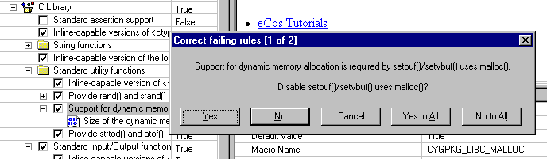
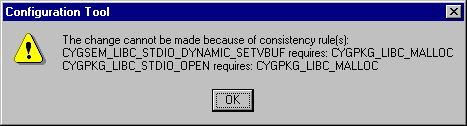

Consistency rules exist to verify that any configuration that may be generated is legal — for example that it will build successfully and generate code that will behave in a reasonable manner.
Consistency rules may be checked as configurable items are changed. In this case it is possible for the Configuration Tool to suggest fixes for the consistency check failure(s) about to be introduced by suggesting a change to a related item:

If you accept the fix (by clicking the "Yes" or "Yes to All" buttons) an appropriate change will be made to the related configuration item. If you click "No" or "No to All" no such change will be made, but the setting of the original item will still be possible. If you click Cancel at any stage the setting will be aborted and you will be alerted to the set of failing rules:

Note that the Configuration Tool will only be capable of suggesting fixes in limited circumstances. The conditions are:
The failing rules are "requires" or "precludes" rules.
The related item is a Boolean item
The item being changed does not cause child items to be enabled which themselves cause consistency checks to fail.
The process of suggesting fixes may be disabled by means of the Build->Options dialog.
For any item, you can identify currently failing consistency rules in the Properties Table; failing rules are marked with an exclamation point. A complete list may be obtained by using the Build->Options dialog.